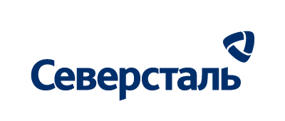

Специализируемся на разработке комплексных мультимедийных решений для музеев, корпоративных пространств, выставочных экспозиций и промышленных предприятий. Создаем проекты полного цикла — от концепции до производства и запуска.
Смотреть портфолиоИнженерный подход, прогрессивное программирование и передовой дизайн для решения сложнейших демонстрационных задач.
Иммерсивные виртуальные экскурсии по реальным производствам, интерактивные мобильные приложения и симуляторы для обучения персонала.
Профессиональный видеопродакшн: презентационные 3D-ролики, сложная технологическая анимация и графика для ультрашироких экранов.
Цифровые музейные экспозиции, сенсорные терминалы и мультимедийные системы, управляемые жестами на базе датчиков компьютерного зрения.
Нам доверяют предприятия Госкорпорации «Росатом», ведущие металлургические холдинги, промышленные объединения, образовательные организации, крупные музеи и технологические лидеры России.



Ознакомьтесь с примерами внедрения наших программно-аппаратных комплексов, иммерсивных сред и интерактивных систем.
Интерактивное приложение для HTC Vive XR: режим «макета на столе», пошаговая анимация сборки оборудования и демонстрация систем в разрезе.
Точная симуляция технологических цепочек, физики газов и работы с инженерным меню.
Безопасный доступ на закрытые участки производства для клиентов и инвесторов.
Музейный программно-аппаратный комплекс: сканирование рисунков, распознавание по QR-кодам и генерация 3D-текстур на проекции.
Безопасный доступ на закрытые участки производства для клиентов и инвесторов.
Музейный программно-аппаратный комплекс: сканирование рисунков, распознавание по QR-кодам и генерация 3D-текстур на проекции.
Создание двух отчетных фильмов под ключ: многокамерная съемка спикеров БРИКС, хромакей, инфографика и саунд-дизайн.
Создание 21 трехмерного фильма в 4K и разработка ПО для тач-панелей с разветвленной логикой боевых сценариев.
CG-продакшн для Росатом Недра: трехмерная линия времени, фотореалистичный рендеринг металлургических процессов и инфографика.
Информационный софт для сенсорных столов: интерактивная SVG-карта России, аналитические счетчики и инклюзивный интерфейс.
ПО для сенсорных столов: кастомизация 3D-модели атомной станции в цвета национальных флагов и моментальная печать сувенирных магнитов.